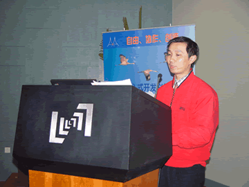
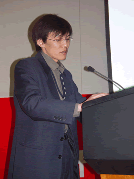
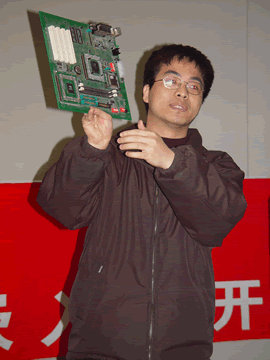
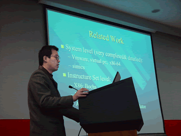
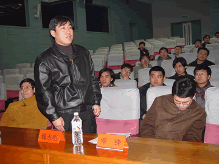

2003年3月1日上午9：30，经过筹备组11名成员2个多月的紧张筹备，AKA嵌入式开发兴趣小组（英文名称：AKA Embedded）成立大会在北京中关村中科院新图书馆报告厅胜利召开。与会成员100余人，其中有四名外地成员专程赴会。

陶品博士在致大会开幕词
中子代表筹备组对本次大会作了为时30分钟的大会报告，报告分为4部分，1).小组筹备工作简要汇报，2).小组为什么，3).小组怎么做，4).小组是什么。AKA Embedded小组网站www.akaembed.org也于当日正式开通，网站设有嵌入式技术论坛和内容精练的FTP资料库。小组杂志《野雁》预刊也于同日在网上发布，小组的嵌入式开放实验室正在建设中并已初具雏形，现有8套可用的嵌入式开发系统可供学习和开发调试。

AKA Embedded发起人中子在作大会报告
在本次大会上，计算所胡伟武研究员，作为小组顾问委员，作了为时20分钟的演讲，并介绍了"龙芯"CPU的最新研制进展。"龙芯"研制组的张福新带来了几块基于"龙芯"的开发板，并给大家作了现场演示。
胡伟武研究员在作激情演讲

龙芯开发组的张福新在给大家作演示
嵌入式开源项目SkyEye的发起人陈渝博士还在本次大会上作了技术报告，介绍了该项目的具体思路和进展情况。

SkyEye嵌入式开源项目负责人陈渝在作技术报告
下午有30余名成员参加了小组发展讨论会，就网站建设、FTP、嵌入式开放实验室、组织工作等问题进行了卓有成效的探讨。
大会上产生了第一届常务组成员，共13名，任期1年，明年进行换届选举，以后每届任期2年。第一届常务组成员年龄最大29岁，最小23岁，平均年龄26岁。
AKA Embedded第一届常务组成员与胡伟武、魏永明合影
小组顾问委员会现有顾问委员6名：胡伟武（计算所）、邵贝贝（清华）、魏永明（miniGUI）、章锋(Lisoleg)、谭军(ARM)、陈榕(科泰世纪)。

魏永明作为小组顾问委员即兴发言
在本次大会上，提出了小组未来几年内的奋斗目标：将小组初步建设成为一个具有完善的组织架构和先进的组织体系、拥有自己的嵌入式开放实验室、拥有国内一流国际知名的嵌入式技术网站、能为成员有效提供学习、实践、交流、承担项目、就业联络等机会的强有力的技术社团和公共平台。
AKA嵌入式开发兴趣小组秉承了AKA"自由、协作、创造"的理念，并确立了"非赢利原则"和"组织化原则"两条基本原则，为小组的可持续发展和小组目标的实现奠定了基础。此外，小组还保持商业中立，并声明小组在技术上的倾向性或兴趣取向与商业立场无关。
嵌入式技术浓缩了计算机的核心技术，为适应不同兴趣的嵌入式技术开发者，小组设立了"嵌入式操作系统"、"嵌入式系统"、"龙芯"三个技术分小组，各项学习、交流、实践活动将陆续开展起来。
AKA Embedded小组是个开放的技术组织，我们热切期盼那些心怀技术理想，富有热情和使命感的青年朋友加入AKA Embedded小组，共同携手，共同提高，并大力拓展嵌入式技术开发者的群众基础，为国家的嵌入式技术乃至整个信息技术的进步作出应有的贡献。
报名参加小组的成员现有300余名，其中北京成员约占2/3，其次是广东（广州、深圳）、上海、杭州、武汉、合肥等地。通过考察和审核，小组第一批200名正式成员将从中产生。
|